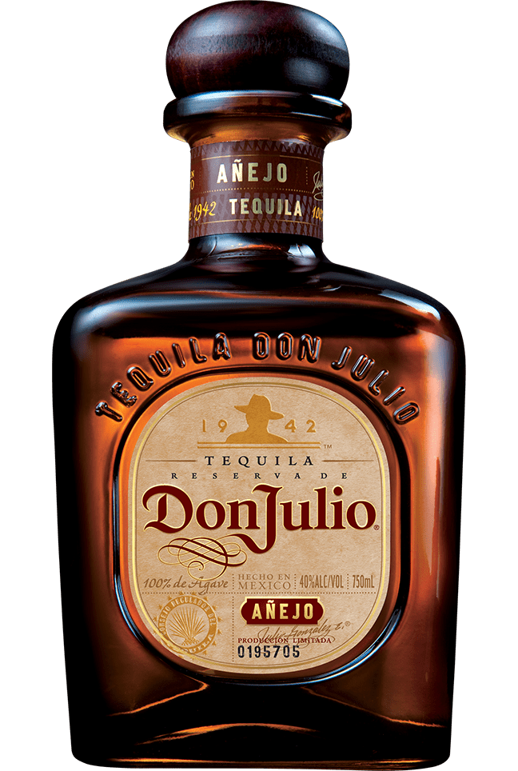

Tequila añejo
Añejado en lotes más pequeños dentro de barriles de roble blanco americano durante dieciocho meses, el tequila Don Julio® Añejo es la prueba del sabor superior del tequila artesanal añejado.
Rico, distintivo y extraordinariamente complejo, su sabor sorprende con el equilibrio perfecto entre el agave, la madera y los toques de vainilla. Se degusta mejor solo en una copa o simplemente con hielo.
